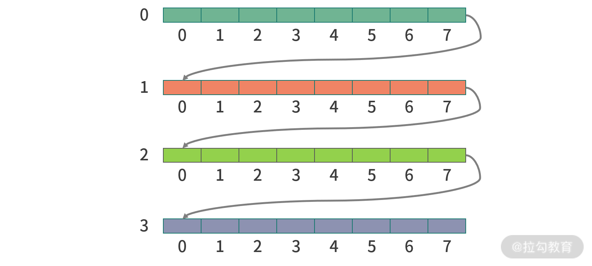

- 00 开篇词 为什么大厂面试必考操作系统？.md.html
- 00 课前必读 构建知识体系，可以这样做！.md.html
- 01 计算机是什么：“如何把程序写好”这个问题是可计算的吗？.md.html
- 02 程序的执行：相比 32 位，64 位的优势是什么？（上）.md.html
- 03 程序的执行：相比 32 位，64 位的优势是什么？（下）.md.html
- 04 构造复杂的程序：将一个递归函数转成非递归函数的通用方法.md.html
- 05 存储器分级：L1 Cache 比内存和 SSD 快多少倍？.md.html
- 05 (1) 加餐 练习题详解（一）.md.html
- 06 目录结构和文件管理指令：rm -rf 指令的作用是？.md.html
- 07 进程、重定向和管道指令：xargs 指令的作用是？.md.html
- 08 用户和权限管理指令： 请简述 Linux 权限划分的原则？.md.html
- 09 Linux 中的网络指令：如何查看一个域名有哪些 NS 记录？.md.html
- 10 软件的安装： 编译安装和包管理器安装有什么优势和劣势？.md.html
- 11 高级技巧之日志分析：利用 Linux 指令分析 Web 日志.md.html
- 12 高级技巧之集群部署：利用 Linux 指令同时在多台机器部署程序.md.html
- 12 (1)加餐 练习题详解（二）.md.html
- 13 操作系统内核：Linux 内核和 Windows 内核有什么区别？.md.html
- 14 用户态和内核态：用户态线程和内核态线程有什么区别？.md.html
- 15 中断和中断向量：Javajs 等语言为什么可以捕获到键盘输入？.md.html
- 16 WinMacUnixLinux 的区别和联系：为什么 Debian 漏洞排名第一还这么多人用？.md.html
- 16 (1)加餐 练习题详解（三）.md.html
- 17 进程和线程：进程的开销比线程大在了哪里？.md.html
- 18 锁、信号量和分布式锁：如何控制同一时间只有 2 个线程运行？.md.html
- 19 乐观锁、区块链：除了上锁还有哪些并发控制方法？.md.html
- 20 线程的调度：线程调度都有哪些方法？.md.html
- 21 哲学家就餐问题：什么情况下会触发饥饿和死锁？.md.html
- 22 进程间通信： 进程间通信都有哪些方法？.md.html
- 23 分析服务的特性：我的服务应该开多少个进程、多少个线程？.md.html
- 23 (1)加餐 练习题详解（四）.md.html
- 24 虚拟内存 ：一个程序最多能使用多少内存？.md.html
- 25 内存管理单元： 什么情况下使用大内存分页？.md.html
- 26 缓存置换算法： LRU 用什么数据结构实现更合理？.md.html
- 27 内存回收上篇：如何解决内存的循环引用问题？.md.html
- 28 内存回收下篇：三色标记-清除算法是怎么回事？.md.html
- 28 (1)加餐 练习题详解（五）.md.html
- 29 Linux 下的各个目录有什么作用？.md.html
- 30 文件系统的底层实现：FAT、NTFS 和 Ext3 有什么区别？.md.html
- 31 数据库文件系统实例：MySQL 中 B 树和 B+ 树有什么区别？.md.html
- 32 HDFS 介绍：分布式文件系统是怎么回事？.md.html
- 32 (1)加餐 练习题详解（六）.md.html
- 33 互联网协议群（TCPIP）：多路复用是怎么回事？.md.html
- 34 UDP 协议：UDP 和 TCP 相比快在哪里？.md.html
- 35 Linux 的 IO 模式：selectpollepoll 有什么区别？.md.html
- 36 公私钥体系和网络安全：什么是中间人攻击？.md.html
- 36 (1)加餐 练习题详解（七）.md.html
- 37 虚拟化技术介绍：VMware 和 Docker 的区别？.md.html
- 38 容器编排技术：如何利用 K8s 和 Docker Swarm 管理微服务？.md.html
- 39 Linux 架构优秀在哪里.md.html
- 40 商业操作系统：电商操作系统是不是一个噱头？.md.html
- 40 (1)加餐 练习题详解（八）.md.html
- 41 结束语 论程序员的发展——信仰、选择和博弈.md.html
05 (1) 加餐 练习题详解（一）
今天我会带你把《模块一：计算机组成原理》中涉及的课后练习题，逐一讲解，并给出每个课时练习题的解题思路和答案。
练习题详解
01 | 计算机是什么：“如何把程序写好”这个问题是可计算的吗？
【问题】 可不可以构造一段程序证明停机问题无解?如果可以，请用自己熟悉的语言写出这段程序。
【解析】拿到这道题，我们可以先从问题的抽象入手。
- 判断一段程序是否会停机的方法可以抽象成一个函数。
- 一段程序，也可以抽象成一个函数。
因此，问题可以转换为：存不存在一个通用函数判断另一个函数是否会停止？
接下来，再来构造冲突。
假设存在一个函数 willStop，它只有一个参数 func，willStop 可以判断任意函数 func 是否会停止：
- 如果会停止，返回 true；
- 如果不会停止返回 false。
willStop 具体如何实现我们无法给出，这里只是做一个假设。
func willStop(func){
//...
}
下面我们构造一组冲突，构造一个叫作wrappedWillStop函数，它调用willStop构造冲突。
function wrappedWillStop(){
if( willStop(wrappedWillStop) ) {
while(true){}
} else {
return
}
}
wrappedWillStop()
wrapped版本构造冲突方法如下：调用willStop并把自己传进去。如果willStop认为wrapped会停止，那么就执行一个死循环。 如果willStop认为wrapped不会停止，就直接返回。
通过上述的方法，我们就知道willStop这样的函数肯定是无法被实现的；也就是停机问题无解。
03 | 程序的执行：相比 32 位 64 位的优势是什么？
【问题】 CPU 中有没有求对数的指令？如果没有那么程序如何去计算？
【解析】 CPU 中求一个数字的 2 倍，可以通过左移指令。比如 10 代表数字 2，左移 1 位变成 100 就代表数字 4。CPU 提供了乘法指令，所以如果求一个数字的幂，比如 33，可以拿 3*3 再乘以 3，需要计算 2 次。
但是如果求 3100 次方，就不会去计算 100 次。比如你可以先计算出 325，然后再求 (350)2，就是 3100。所以这样就节省了 1 倍的运算。
我举例主要是想告诉大家，CPU 没有提供很复杂的指令，但是这里有很多算法可以降低我们的时间开销。
然后我们来说说求对数，求对数也是没有指令的。因为对数是指数的逆运算，当然我们可以利用乘法运算一点点尝试。比如计算 log_210，我们可以先尝试 32，再尝试 3.12 等等，一直找到以 2 为底 10 的对数。这其实是个近似算法。
另外，在这个问题上聪明的数学家提出了很多近似算法，提升了计算效率。具体这里比较超纲，面试通常只考到有没有求对数的指令，感兴趣的同学可以学习泰勒级数、牛顿迭代法等。
比如下面这个泰勒级数可以用来求以e为底的对数，可以进行相似运算。
【补充内容】1 位的 CPU 能操作多大的内存空间？
在 03 课时程序的执行中，有个问题我讲的不是很明白，在这里我们再讨论一下。
之前提到过 32 位机器只能操作小于 32 位的地址总线，这里其实讲的不太清晰，历史上出现过 32 位操作 40 位地址总线的情况。
接下来再和你探讨一个极端情况，1 位的 CPU 能操作多大的内存空间。
答案是：无限大。
比如说，地址总线 40 位，说明 CPU 上有 40 个引脚接了地址总线。CPU 只有 1 位，因此操作这 40 个引脚可以分成 40 步。每次设置 1 根引脚的电平是 0 还是 1。所以本身 CPU 多少位和能操作多少位地址总线，没有本质联系。但是如果需要分步操作，效率会低，需要多次操作，不如一次完成来得划算。 因此我们今天的设计通常不拿 32 位 CPU 操作 40 位地址总线，而是用 64 位 CPU 操作。
04 | 构造复杂的程序 : 将一个递归函数转成非递归函数的通用方法？
【问题】 假设你使用的程序语言不支持递归程序，如果要求用栈来模拟下面这个斐波那契求第 n 项的程序，应该如何转换成等价的基于栈的非递归实现？
int fib(int n) {
if(n == 1 || n == 2) { return n; }
return fib(n-1) + fib(n-2)
【解析】其实这道题目等同于递归的函数如何非递归表达？改写斐波那契数列第 N 项目。
下面是我的一个伪代码，需要实现一个 Stack。
fib(n) {
stack = new Stack();
// 构造Stack
// stack中每一项是一个Record
// Record第一项是数据（参数或者返回值）
// Record第二项是递归方向(down=1代表向下，up=2代表向上)
stack.push((n, down));
// stack中只有一项的时候递归停止
while(stack.size() > 1) {
(n, phase) = stack.pop();
if(phase == down) {
if(n == 1 || n == 2) {
stack.push((1, -))
continue
}
stack.push((n-1, down))
stack.push((n-1, up))
}
else {
last1 = stack.pop()
last2 = stack.pop()
stack.push((last1[0] + last2[0], up))
}
}
return stack.pop()[0];
}
05 | 存储器分级 ：SSD、内存和 L1 Cache 相比速度差多少倍？
【问题】 假设有一个二维数组，总共有 1M 个条目，如果我们要遍历这个二维数组，应该逐行遍历还是逐列遍历？
【解析】 二维数组本质还是 1 维数组。只不过进行了脚标运算。比如说一个 N 行 M 列的数组，第 y 行第 x 列的坐标是： x + y*M。因此当行坐标增加时，内存空间是跳跃的。列坐标增加时，内存空间是连续的。

当 CPU 遍历二维数组的时候，会先从 CPU 缓存中取数据。
关键因素在于现在的 CPU 设计不是每次读取一个内存地址，而是读取每次读取相邻的多个内存地址（内存速度 200～300 CPU 周期，预读提升效率）。所以这相当于机器和人的约定，如果程序员不按照这个约定，就无法利用预读的优势。
另一方面当读取内存地址跳跃较大的时候，会触发内存的页面置换，这个知识在“模块五：内存管理”中学习。
总结
以上这些练习题你做得怎么样呢？我看到很多同学在留言区写下了练习题答案、思考过程以及课后总结，当然还有很多同学提出了问题。有问题是好事，说明你在认真思考，这也是构建知识体系的一部分。经过长期的积累，相信你会得到意想不到的收获。